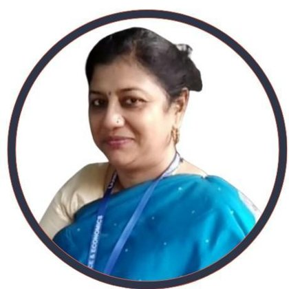

Controller of Examinations · MIT World Peace University, Pune
Prof. (Dr.) Veera Talukdar
An AI-native academic leader. She uses agentic AI to fix the pain points in examinations, results and convocation, building tools in-house instead of waiting on legacy ERP or extra headcount.

- Years in higher education
- 25since 2001
- Publications
- 72journals, conferences, chapters, books
- Patents & designs
- 7India and Germany
- QS Reimagine Education
- 2×nominee, AI in Education, 2025 & 2026
About
Veera Talukdar has spent over two decades in Indian higher education, moving from the classroom into the roles that keep a university running: Principal, Registrar, Director of IQAC and, today, Controller of Examinations at MIT-WPU. She holds a Ph.D. in Engineering from Jadavpur University and an LLB from the University of Mumbai.
Her approach to administration is hands-on and technical. At MIT-WPU she led a student team to build an in-house, AI-native platform for exam monitoring, question-paper selection, result validation and online forms, with analytics and an integrated payment gateway. At Karnavati University she authored the Examination Manual and Convocation SOP that the university still follows.
Alongside this she is a NAAC Assessor, a Quality Controller for SWAYAM/NPTEL, and an active researcher in applied AI, IoT and healthcare informatics.
Contact
veerat21@acm.org